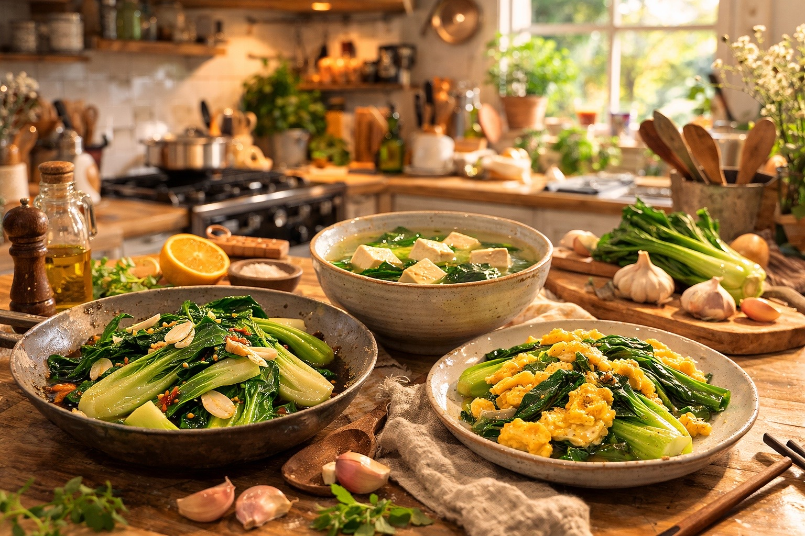

像走進一個會輕聲告訴你：這道菜怎麼煮會更好吃的廚房
這次學一道
青江菜先下梗再下葉
青江菜先下梗再下葉，口感會更脆，也比較不容易炒過頭。
下次掃看看，我們會不定期更新新的料理靈感。
保存方式
先冷藏，料理前再洗
大多數葉菜建議先放冰箱冷藏，保持袋內乾爽，料理前再清洗，風味會更好。
建議 2～3 天內食用，口感最佳。
簡單做、好上手，也更不浪費這包菜的口感。

青江菜先下梗再下葉，口感會更脆，也比較不容易炒過頭。
下次掃看看，我們會不定期更新新的料理靈感。
大多數葉菜建議先放冰箱冷藏，保持袋內乾爽，料理前再清洗，風味會更好。